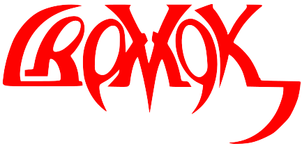
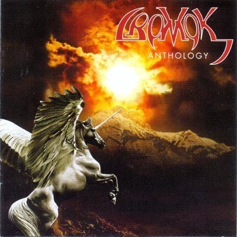

Группа Кромок
На некоторые картинки можно нажимать!
Оглавление статьи:

Сводка
Музыкальный коллектив
Название: Cromok;
Тип: музыкальная группа;
Язык: английский;
Место возникновения: Австралия;
Происхождение: Малайзия.
Коротко
Cromok — это известная Малайзийская группа, легендарное треш-металл формирование, появившееся в поздних 80-х, которая в то время была известна как пионер подпольных групп в Малайзии. Cromok был сформирован в Австралии четырьмя малайзийскими студентами, которые учились в Австралии. В то время состав был таким:
- Дин,
- Карл,
- Мижи,
- Сэм.
{kind=link}
Почему-то на плакате стоят только три человека, хотя вы увидите, что их четверо, если посмотрите видео с концерта.
Эта группа не может быть плохой, ведь в ней оказался малазийский Морфеус (ну, по крайней мере очень похожий на него человек).
История группы
Признанный участник Дин закончил учёбу и покинул Австралию раньше, чем его соотечественники (Сэм, Карл и Мижи).
После того, как Дин покинул группу, он вернулся в Малайзию и сформировал там свою группу, известную под названием D'Cromok.
В конце концов, оставшиеся трое вернулись и стали исполнять без их четвёртого участника.
Смешивая малайзийские культурные и музыкальные влияния с портовым трешем и европейским металлическим стилем вокала
они завоевали сердца слушателей в Малайском металлическом мире и разумы других групп со своим альбомом "Image of Purity"
1991 года выпуска. Их самозваное предприятие продержалось вплоть до 2004 года — успешный результат в рок-подполье.
Лично я в восторг пришёл от альбома "Mean Meaner The Meanest"!
В 2005, группа решила подчеркнуть доминанту своего пути — и сделала прозвище Cromok постоянным погонялом.
Один участник даже решил вернуться в свою старую группу. Трагично, но признанный участник Дин скончался в 90-х годах после того, как выпустил
свой сольный альбом "VII Years VII Days" (хотя в магазинах он значится как альбом группы D'Cromok).
Как я понимаю, вторую часть альбома "VII Years VII Days" друзья Дина выпустили уже после его смерти,
так как мертвец был просто не в состоянии заниматься мастерингом треков из-за своего нулевого пульса и полной невозможности управлять компьютером.
Значение

Cromok — переводится как Пегас. Группа выдавала прекрасные гитарные соло и радовала своим звучанием.
Обложки альбомов потрясали своей высокой детализацией и роскошными гривами статных животных.
А вот D'Cromok свои крылья потерял, однако кони были столь же величественными.
Не исключено, что в основу идеи стилистики игры
Robot Unicorn Attack положены пегасы с
обложек одной из этих двух групп: Cromok или D'Cromok (как мы с вами знаем, в игре помесь единорога с пегасом).
{kind=link}
Также не исключено, что Austen Mengler перенял свой стиль с обложек Cromok.

В настоящее время группа прекратила своё существование. Но верные фанаты группы всё ещё помнят её и говорят про неё тёплые слова. Альбомы группы можно купить на Itunes.
Ссылки
Статья была написана стопицот лет назад и представлена здесь 2016/09/19 и доработана 2016/12/16.